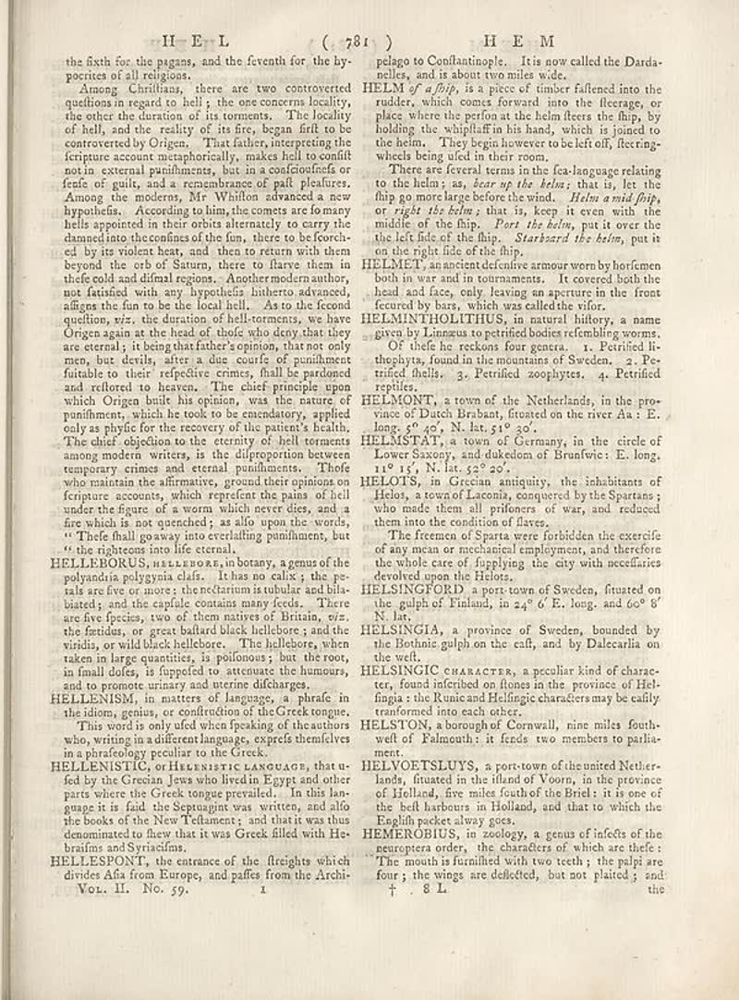

page-1017-5395deb0e141.jpg

Page ID: britannica:309f765b1ecc83e0a7f7762e44b4a927a7555443:train:1017
Running head: H E L
Image SHA-256: 5395deb0e1413694dd6a4e16890741c049681f5838d6fc92ef14a3019a1c87a4

HEM [Section-header]
the fixth for the pigans, and the feventh for the hy- pocrites of all religions. Among Christians, there are two controverted quindices in regard to hell; is the one orchestra locality: the other the duration of its moments. The healthy of hell, and the reality of its fire, began frit to be controverted by Origen. That father, interpreted the freture account metaphorically, makes hell souffl not in external punilments, but in a confouficifa or fresh of guits, and a remainbame of poll pleasure. Among the modern, Mr YMillion advances a new hypothesis... According to him, the comets are farany hellis appointed in their orbits alternately to carry the channel into the cosmos of the fun, there to be forceful by its violent bars, and then to return with them beyond the orb of Saturn, there to flave them in their cold and difficult regions. Another modern author, not detailed with any hypothetical listeners advanced, alignes the fun to be the local hell.. As to the feecond quition, viz. the duration of both moments we have Origen again at the head of choice quite days that they are eternal; it being that father’s opinion, that not only men, but detaly, after a din course of punishment fortable to their respective critics, full be partained and refortered to heaven. The chief principle upon which Origen build his opinion, was the nature of punishment, which he took to be arcadency, applied only as phytic for the recovery of the patients' health. The chief objection to the certyly of heli torments among modern writers, is the disproportion between temporary crimes and extend punilments. Those who maintain the affirmative, ground their opinions on forture accounts, which expect the plans of fall under the figure of a worm which never dies, and a fire which is not quenched; as allo upon the words. "I Thief shall agree into overlifting punilment, but "to the rightness into like eternal. HELLEBORUS, HELLEBORR, in botany, a genus of the polyandria polygynia clafs. I has an cally, the pe- rais are five or more; the reclaim is tubular and blue biarded; and the capital contains many feeds. There are five species, two of them native of Britain, viz. the females, or great balham black hellebore; and the visida, or wild black hellebore. The hellebors, when taken in large quantities, is polinous; but the root, in final dates, is fuppeded to attenuate the humours, and to promote urinary and uterine discharge. HELLENISM, in matters of language, a phrae in the idem, going, or collection of the Greek tongue. This words is only of what breaking of the authors who, writing in a different language, express themselves in a philosophy peculiar to the Greek HELLENISTIC, OF HARRISTIC LANDOABT, that ufed by the Greenian Jews who lived in Egypt and other parts where the Greek tango prevailed. In this lan- gauge it is fail the Septragint was written, and all the books of the New Telmaners; and that it was thus denominated to these that it was Greek filled with He- brafinn and Syriacifine. HELLESPONTS, the entrance of the flereights which divides Afa from Europe, and paths from the Archi- Vol. II. No. 59. pelago to Confantainople. It is now called the Darda- nelles, and is about two miles wide. HELM _g? a flip_, is a piece of timber fallenred into the reader, which comes forward into the literary, or place where the prefix at the helm flere the flag, by holding the whiplaff in his hand, which is joined to the helm. They begin however to be left off, fleeting- which being died in their room. There are several terms in the tea-language relating to the helm; as, _hear up the helm;_ that is, let the flip my or most large before the wind. _Helm amid fribp_ or _right the helm;_ that is, keep it even with the middle of the hip. _Part, the helm_, put it over the the of field of the hip. _Starkbard the helm_, put it on the right side of the flip. HELMET, an ancient dective armour worn by horlemen both in war and in tournaments. It covered both the head and face, you leaving an anymore to the front fetured by bars, which was called the vitor. HELMINTHOLTHUIS, in natural history a name given by Lumana un pretrified bodies of rembling worms. Of the lie no reckons four genera. 1. Petrified li- thehyts, found in the mountains of Sweden. 2. Petirified shells. 3. Petrified zophytes. 4. Petrified reptiles. HELMONT, a town of the Netherlands, in the province of Dutch Paraban, situated on the river Aa :E. long. 5" 6/5, N. lat. 51" 30". HELMSSTAT, a town of Germany, in the circle of Lower Saxony, and dukedom of Brunfwie :E. long. 11" 15, N. lat. 22" 22. HELOTS, in Grecian antiquity, the inhabitants of Helon, a town of Lacom, conquer by the Spartan; who made them all prisoners of var, and reduced them into the condition of flares. The femme of Sparta were forbidden the excerite of any mean on mechanical employment, and therefore the whole care of fupplying the city with necefairs develop upon the filters. HELSINGTORDIN, a ports town of Sweden, fituated on the gulph of Finland, in 24" 6' E. long. and 60" 8' lat. HELSINGIA, a province of Sweden, bounded by the Botnhic gulph on the cafl, and by Dalecarila on the well. HELSINGIC CHARACTER, a peculiar kind of character, found inferited on flones in the province of Hel- fingia s the Runic and Hellingic characters may be easily transformed into each other. HELLTON, a thorough of Cornwall, nine miles foutwelt of Falmouth; it finds two members to parla- ment. HELNOETSLUTS, a port-town of the united Netherlands, fituated in the illand of Voorn, in the province of Holland, five miles south of the Breel; it is one of the bell chorus in Holland, and that to which the English packet always goes. HEMEROBIUS, in zoology, a genus of deficits of the temperature, the characters of which are thefe. The mouth is furnished with two teeth; the pulpit are four; the wings are dellected, but not planted ; and: